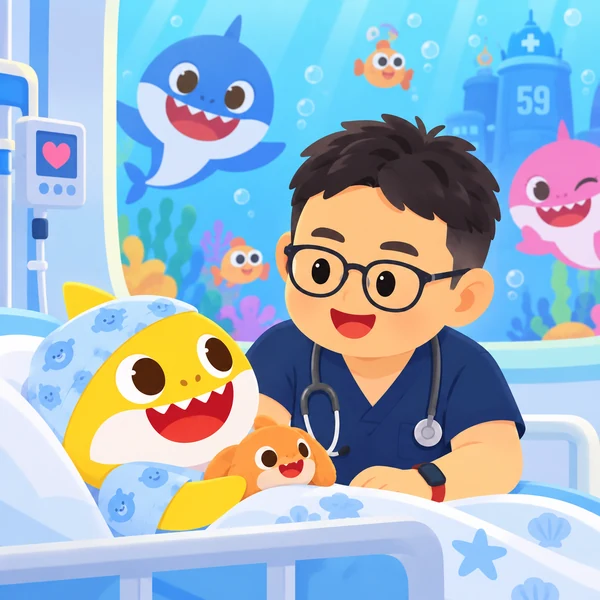

Hematology
소아혈액질환
소아빈혈 · 재생불량빈혈 · 유전용혈빈혈 · 혈우병
소아·청소년·젊은 성인의 혈액질환 및 혈액종양 · 원저 / 종설 모집
Pediatric and AYA hematology and hematological malignancies · Original research / Reviews
Insights in Hematology and Hematological Malignancies in Children, Adolescents, and Young Adults
Leukemia & lymphoma위험도 분류 · MRD · 치료 성적 · 조직구 질환Risk stratification, MRD, outcomes and histiocytic disorders
Immunotherapy면역치료 · 표적치료 · CAR-TImmunotherapy, targeted therapy and CAR-T
HSCT & GVHD전처치 · 이식 후 합병증 · 대체 공여자Conditioning, complications and alternative donors
Bone marrow failure선천성 골수부전 · MDS · 재생불량성빈혈Inherited marrow failure, MDS and aplastic anemia
Benign hematology빈혈 · 면역성 혈구감소 · 출혈 및 혈전 질환Anemia, immune cytopenias, bleeding and thrombosis
Supportive care & AYA지지요법 · 생존자 관리 · 삶의 질 · 지역 간 격차Survivorship, quality of life and disparities in care
Open access · APC CHF 2,600 after acceptance; taxes may apply. 최신 게재료 확인 ↗Current publication fees ↗

소아빈혈 · 재생불량빈혈 · 유전용혈빈혈 · 혈우병
혈액암: 백혈병, 림프종, 혈구탐식증후군 등
고형암: 신경모세포종, 뇌종양, 랑게르한스세포종, 횡문근육종, 골육종, 윌름스 종양 등
ChatGPT를 활용해 개발한 도구를 소개하는 공간입니다.
ChatGPT를 활용해 개발한 문헌 선별 도구입니다.
Rayyan을 벤치마킹해서 메타분석 시에 필요한 문헌 선별용으로 개발했습니다.
아래 버튼을 눌러 실행 페이지로 이동할 수 있습니다.
공개자료를 바탕으로 진료에 필요한 정보를 찾아보는 도구입니다.Tools for looking up clinical information from public sources.
약제·질환별 요법과 신청기관 한정 인정·불승인·검토 중 현황을 검색하고, 원본 문서와 변경 이력을 확인할 수 있습니다.Search regimens by drug or disease, review institution-limited recognition, non-approval and pending review status, and consult original documents and change history.
진료 참고용입니다. 처방 전 최신 공고와 원본 문서를 확인하세요.For clinical reference. Check the latest notices and original documents before prescribing.
질환명·상병코드·특정기호로 기준을 찾고, 희귀질환 별표 4를 원문 표 형태로 조회할 수 있습니다. 원본 자료와 판본별 변경 내용도 함께 확인하세요.Search diseases, KCD codes and special coverage codes, view rare-disease Annex 4 in its original table structure, and consult source files and edition comparisons.
진료 참고용입니다. 실제 적용 전 해당 진료일에 유효한 공식 기준을 확인하세요.For reference. Confirm the official criteria effective on the date of care.
직접 선정한 논문의 핵심 내용과 주제를 정리합니다.
이재민 교수의 논문 목록 ↗
연도별 최신순 · 같은 연도에서는 게재일순 (온라인 공개일 우선, 미확인 시 정식 게재일 기준)
선정한 논문을 준비 중입니다. 등록하면 핵심 요약과 주제 태그를 함께 볼 수 있습니다.
소아혈액종양 분야에서 주목할 소식을 전합니다.
이재민 교수 관련 뉴스 ↗
선정한 소식을 준비 중입니다.